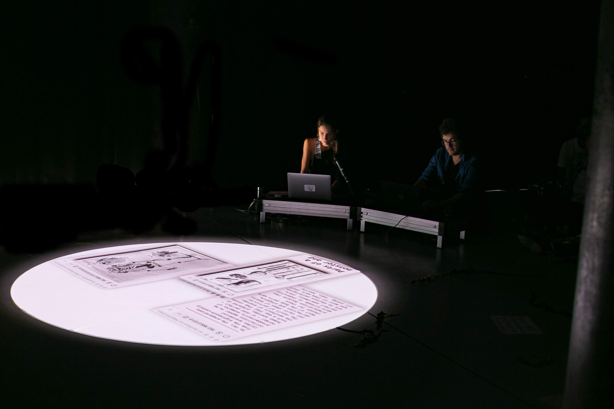

Anatomies of Intelligence is an artistic research project led by Joana Chicau and Jonathan Chaim Reus, who together work to make connections between the formats and collections of anatomical knowledge and investigations into the “anatomy” of computational learning and prediction processes, datasets and machine learning models.
The project manifests in various forms: from live algorithmic performances to participatory workshops, where they tease out hands-on, embodied experiences for existing with and within the organisms of data science.
Their performances take place in a unique hybrid (online and in situ) immersive audio-visual setting, combining voice, composed sound and visuals in a custom developed browser-based virtual platform. Inspired by net art and live coding practices, this "virtual theatre" hosts a growing dataset of specimens collected from both data-driven AI research as well as historical human-anatomical research archives such as that of Wikimedia and the Wellcome Collection.
The same virtual theatre platform is used to explore, through live coded performative investigations of the dataset, how such a collection and a "hands-on" demonstrative approach can confront the idealized bodies of artificial intelligence — its fixed representational structures and opaque learning processes.
Longer Video Interview on the project available here.
Timeline of various performances, presentations and presences.
"What are the crossing points between the captures and inscribed elements of so called bodies through the ever-damaging participation of modern anatomical techno-sciences? How does dualistic divide between health and pathology provoke technical wounds across fragile somapolitical mediated encounters? What are the explicit sacrifice areas that datasets and computational learning models render on a daily basis? Why do categories, algorithms and prediction processes constitute bodily harm.. and how could they constitute situated healing and partial reparations instead?" — Jara Rocha, curator at ISEA 2022.
↝ yet to be published Chicau, Joana, and Jonathan Reus. 2023. Theatre and Performance Design Journal. Issue: On Capture. Taylor and Francis Press. Link.
↝ yet to be published Chicau, Joana, and Jonathan Reus. 2023. Organised Sound. Issue: Live Coding Sonic Creativities. Cambridge University Press. Link.
↝ featured in: Soon, Winnie, and Geoff Cox. 2021. Aesthetic Programming 2020: A Handbook of Software Studies. Open Humanities Press. Link available here.
↝ mentionned in: V2_ at Operator Radio 2022 VII Link available here.
↝ mentionned in: ‘La irrupció’ inaugura en Santa Mònica (Barcelona) para ISEA Link available here.
↝ article: Il teatro dell’algoritmo: Umanesimo Artificiale per le Residenze Digitali [Italian] Link available here.
Joana Chicau [PT/UK] is a graphic designer, coder, researcher — with a background in dance. Her trans-disciplinary project interweaves web programming languages and environments with choreographic practices. In her practice she researches theintersection of the body with the constructed, designed, programmed environment, aiming at in widening the ways in which digital sciences is presented and made accessible to the public. She has been actively participating and organizing events with performances involving multi-location collaborative coding, algorithmic improvisation, open discussions on gender equality and activism.
joanachicau.comJonathan Reus [US/NL] is a composer, researcher and transdisciplinary artist. Fundamentally interdisciplinary in approach, Reus’ performance and artistic works are characterized by hands-on experimentation, hybrid-thinking, and consideration for the material conditions and embodied relationships in which culture, technologies, and knowledge are created. In this spirit, Reus’ music and performance draw equally from vernacular folk music traditions as from live-coding, data feminism and neuroscience. He uses recombination, intervention, and modification of technological media to uncover new narratives and imagine musical futures.
jonathanreus.com 